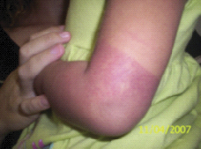
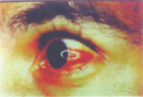

| Febre ou historia de febre recente de sete dias; | ||
| É o caso confirmado laboratorialmente e com todos os critérios presentes a seguir: | Trombocitopenia (≤100.000/mm3); | |
| Tendências hemorrágicas evidenciadas por um ou mais dos seguintes sinais: prova do laço positiva, petéquias, equimoses ou púrpuras, sangramentos de mucosas do trato gastrintestinal e outros; | ||
| Extravasamento de plasma devido ao aumento de permeabilidade capilar, manifestado por: hematócrito com aumento de 20% sobre o basal na admissão; Queda do hematócrito em 20% após tratamento adequado; Presença de derrame pleural, ascite ou lipoproteínemia. | ||
| A febre hemorrágica da dengue pode ser classificada, de acordo com a sua gravidade, em: | ||||||
|  |  | |||||
| Foto: Lúcia Rocha para o MS | Foto: Marcos Boulos | |||||
GRAU I |
GRAU II |
GRAU III |
GRAU IV |
|||
Febre acompanhada de sintomas inespecíficos, em que a única manifestação hemorrágica é a prova do laço positiva |
Manifestações do Grau I acompanhadas de hemorragias espontâneas leves (sangramento de pele, epistaxe, gengivorragia e outros); |
SCD, colapso circulatório com pulso fraco e rápido, estreitamento da pressão arterial ou hipotensão, pele pegajosa e fria e inquietação |
SCD caracterizado por choque profundo com ausência de pressão arterial e pressão de pulso imperceptível. |
|||